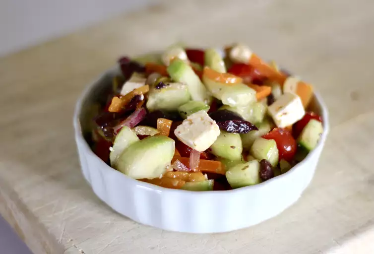

Greek Salad

How to prepare a Greek Salad
Delicious meal in a few easy steps
Ingredients
- 2 large English cucumbers
- 1 pinch kosher salt
- 2 cups of cherry tomatoes
- 1/4 red onion
- 1/2 red bell pepper
- 1/2 cup pitted Kalamata olives
- 1/2 cup pitted green olives
- 2 tablespoons minced fresh origano
- salt and freshly ground black pepper to tase
Steps
-
Peel off a few strips of cucumber skin using a channel knife, creating a
striped pattern. Cut cucumbers in half crosswise. Cut each half into
quarters before cutting into 1/4- to 1/2-inch slices. Place into a
colander; toss with some kosher salt and let sit for 10 to 15 minutes.
-
Meanwhile, cut cherry tomatoes in half. Rinse cucumbers; drain
thoroughly for 10 to 15 minutes more.
-
While cucumbers are draining, slice onion thinly. Cut bell pepper into
strips. Turn knife diagonally and cut strips into diamond-shaped pieces.
Slice Kalamata and green olives.
-
Combine cucumbers, tomatoes, onion, bell pepper, olives, and 2
tablespoons oregano in a bowl. Season with salt, black pepper, and
cayenne. Sprinkle in vinegar and toss thoroughly. Drizzle in olive oil.
Add about 2/3 of the feta cheese and toss again. Cover with plastic wrap
and refrigerate for 30 to 60 minutes.
-
Give the salad another mix. Taste and season as desired. Scatter
remaining feta cheese on top and garnish with remaining oregano.